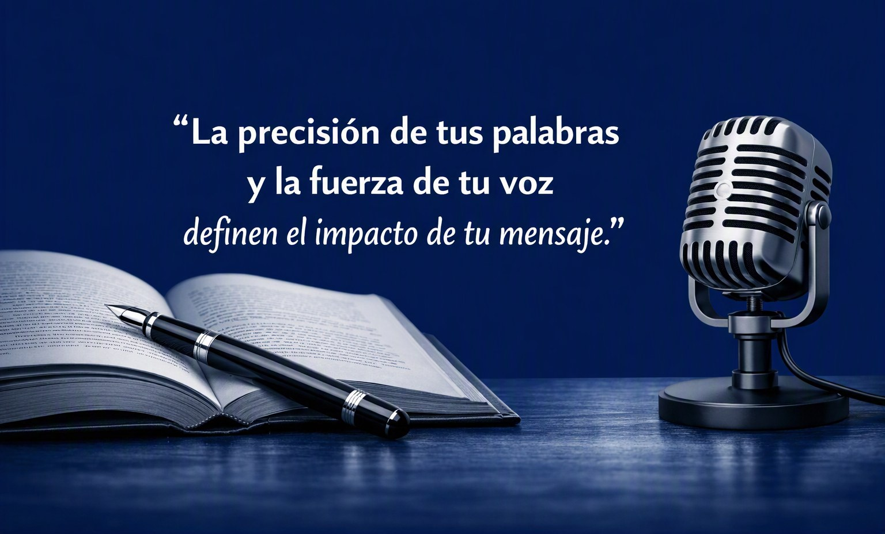

Conducción de eventos
Ceremonias, foros académicos, congresos, presentaciones de libros y eventos institucionales conducidos con presencia y calidez.
Corrección de estilo para manuscritos académicos y autores independientes, y servicios profesionales de voz: conducción de eventos, materiales de capacitación y capacitación para hablar en público.

Reviso tu manuscrito para que cada idea se exprese con precisión y buen estilo, sin perder tu voz como autor. Acompaño tanto a investigadores, docentes y estudiantes de posgrado como a autores independientes que preparan su libro.
Puntuación, concordancia, acentuación y sintaxis revisadas con cuidado.
Ideas que fluyen de párrafo a párrafo, sin repeticiones ni ambigüedades.
Registro académico preciso o voz literaria cuidada, respetando siempre tu estilo como autor.
Terminología, títulos, citas y referencias uniformes de principio a fin.
Pongo mi voz al servicio de tu evento, tus cursos y tu equipo. Comunicación clara, cálida y profesional para que tu mensaje se escuche y se recuerde.
Ceremonias, foros académicos, congresos, presentaciones de libros y eventos institucionales conducidos con presencia y calidez.
Voz para cursos, tutoriales, videos institucionales y materiales educativos: clara, cercana y fácil de seguir.
Aprende a usar tu voz, ordenar tus ideas y presentarte con seguridad frente a cualquier audiencia.
Soy docente universitaria y creadora digital, originaria de Delicias, Chihuahua. En mi canal Regando Historia comparto el amor por las palabras, la cultura y la memoria. Hoy pongo esa experiencia a tu servicio: en el aula aprendí a cuidar cada palabra escrita, y frente al micrófono, el poder de cada palabra dicha.
“La precisión de tus palabras y la fuerza de tu voz definen el impacto de tu mensaje.”
Cuéntame qué necesitas: tu manuscrito, tu libro, tu evento, tu curso o tu grupo.
Revisamos alcance y tiempos de entrega, y te preparo una propuesta.
Te entrego tu texto corregido o tu proyecto de voz, listo para brillar.
Escríbeme por Facebook y platiquemos sobre tu manuscrito, tu evento o tu proyecto de voz.
Contactar a Sandra